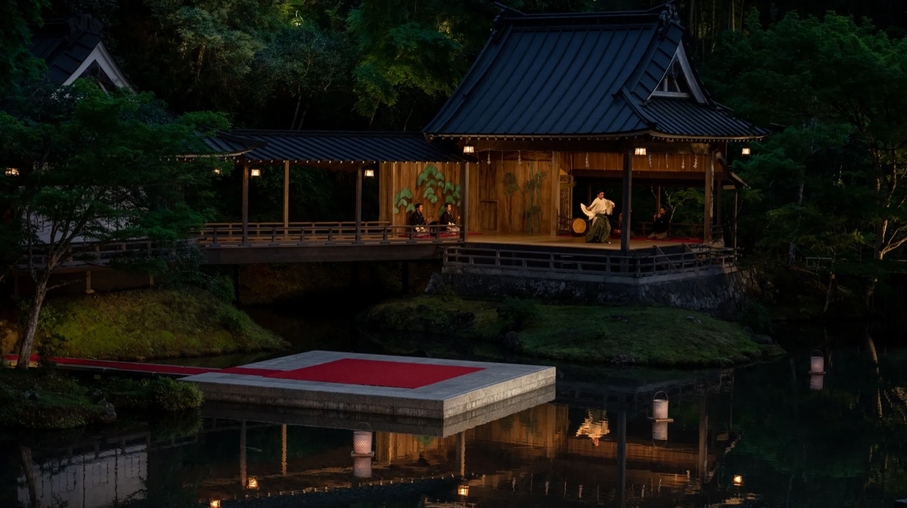

Sun 814:00
Akiba Fukurou owl café
PaidTwo adults; ¥7,600 paid. Arrive by 13:50; late entry is not permitted. Email evidence ↗

The plan · decided 23 August 2026
Fifteen nights — Tokyo, three at 1,269m on Lake Chuzenji, three in a ryokan founded in 1484 on the Izu peninsula, and the same Kyoto week pointed north at the early colour
Fri Nov 6 → Sun Nov 22, 2026 15 nights 32–60°F — Okunikko is the cold part $76,000 per couple
Tokyo · 4n→Okunikko · 3n→Shuzenji · 3n→Kyoto · 5nOpen-jaw — in to Tokyo (HND), home from Osaka (KIX), landing 22 November with three clear days before Colorado
The signature view: the Gekkeiden Noh stage lit at dusk on the far bank of the ryokan's pond, its cypress-bark-and-tile roof and open pillared front glowing against black forest, a performer in white on the boards with musicians seated behind, a covered bridge running off to the left, and a low concrete platform laid with a red carpet standing out in the middle of the water, lanterns doubled in the still surface.
Four bases, fifteen nights, both flights ticketed. Aman Tokyo November 7–11, Ritz-Carlton Nikko November 11–14, Asaba November 14–17 and Hotel The Mitsui Kyoto November 17–22. The Ritz stay was shortened successfully on September 1; there is no double-booked fourth night.
The booked experiences now shape the days. Owl café November 8 at 14:00, est at 18:30, Tokyo archery November 9 at 09:30, NARISAWA November 10 at 17:30 and Hiramatsu Kodaiji November 21 at 18:30. Hirata was declined; Kikyo Hayamitsu in Aioi is now confirmed for November 20, 13:30–17:30. Kintsugi is confirmed and paid for November 19, 14:00–16:00, ¥121,770 for two including gold.
The landscapes remain the reason for the route. Lower Nikko’s shrines and gorge, three nights at Asaba on Izu, and a Kyoto week with Takao, Ohara, Arashiyama and Kurama as flexible outings. The day sheets distinguish fixed bookings, provisional holds and open time, with options for each gap. Sushi Iwa is confirmed November 18 at 18:00 for two.
Checked 10 November 2026 (sushi and workshops; other items retain prior review), California time. Appointment times are Japan time. A request, offer or published slot is not a confirmed booking.
Sun 814:00
Two adults; ¥7,600 paid. Arrive by 13:50; late entry is not permitted. Email evidence ↗
Sun 818:30
Two adults; 9-course est menu, ¥32,000 each. Full dietary adaptation accepted. The confirmation asks for a card guarantee; completion is not evidenced in email. No move to November 9 is confirmed. Email evidence ↗
Mon 909:30
Two participants, ¥40,000 total paid by Stripe per invoice SI-2026000041. Confirm the actual dojo address, arrival instructions and finish time; the invoice contact address is not established as the venue. Email evidence ↗
Tue 1017:30–20:00
Two guests, table, Chef’s Tasting Course. Ashly’s restrictions were submitted with the booking; a separate kitchen acceptance was not found. Email evidence ↗
Sat 14 – Mon 16Seatings to agree
Three nights confirmed and prepaid. Gluten-free meals accepted in August; November 1 email requests final dietary details, arrival time and transport. November 14 drum performance is included in the prepayment request; confirm its time. Email evidence ↗
Wed 1818:00
Confirmed November 18 at 18:00 for two, non-smoking counter, under Atallah Ryan. Course listed at ¥34,650 per person (¥69,300 for two); meal payable at the restaurant. AutoReserve fee ¥8,640 paid separately. Cancellation within 48 hours: 100% plus 10% handling fee. Dietary adaptation and cooked alternatives are not established by this confirmation. Address: Shimo-Tsumekasuyamachi-dori, Kawaramachi, Shimogyo Ward; 075-371-9303. Email evidence ↗
Thu 1914:00–16:00
Confirmed and paid: November 19, 14:00–16:00, two participants at Akagane Resort Kyoto Higashiyama 1925, 400-1 Kinencho. Wabunka booking 25636; ¥121,770 including real gold for both and English interpretation. Arrive on time; over 15 minutes late is a no-show without refund. Cancellation charges apply from November 9 at 14:00 JST; rescheduling is no longer allowed. Email evidence ↗
Fri 2013:30–17:30
Confirmed by the separate November 3 AirRESERVE email: November 20, 13:30–17:30, two participants, ¥112,000 including tax, booking 105PHCHAG. Payment is not evidenced. Arrange language support, arrival requirements, Kyoto–Aioi trains and both taxis. Email evidence ↗
Sat 2118:30
Two adults; Koudaiji course, ¥72,600 total, pay at venue. Dietary adaptation accepted and recorded. Prearrange the hotel car; allow time to return and change before dinner. Email evidence ↗
Sat 710:00 offered
90-minute hot stone and Grounding Massage Ritual offered for two, subject to availability. Nourishing Ritual is full that morning. No acceptance or final spa confirmation found. Email evidence ↗
Tue 10 preferredMorning requested
Aman’s November 3 reply places the experience in Kamakura. Sample 10:00–18:30 day with 13:30–15:00 workshop; ¥400,000 excluding tax for two including eight-hour car and English guide. Not booked; the sample return conflicts with NARISAWA at 17:30. Hayamitsu is confirmed. Email evidence ↗
Tue 17 / Thu 1913:00 / 09:00 requested
Mitsui replied November 6 that Masahiro does not accept third-party concierge reservations; book directly by website or phone if still wanted. Hayamitsu November 20 is confirmed, so avoid a duplicate. Email evidence ↗
Mon 9 option16:15–17:45 if booked
No confirmation found. November 8 conflicts with est after return travel. November 9 could work only after the archery finish and dojo location are known, with reserved trains and local transfers. Published tour time is not seat availability. Official details ↗
Proposed: Lakehouse November 11; teppanyaki November 12; sushi November 13. Confirm each counter’s service and dietary acceptance; no dinner confirmations found. Hotel activity / hiking inquiry sent October 30 is also awaiting a reply. Email evidence ↗
Sushi Iwa November 18 at 18:00 and Hiramatsu November 21 at 18:30 are confirmed. November 17, 19 and 20 remain open; Mitsui authorization form submission is not evidenced. Email evidence ↗
Thu 19Slot to obtain
Reservation required November 13–December 6. No ticket found; Ohara remains workable without this stop. Official details ↗
Sun 2211:30 proposed
Obtain dietary acceptance and finish by about 13:00 for the planned 13:30 airport departure. Takeaway is an alternative if timing changes. Official details ↗
Both ends are ticketed. ANA business out, United Polaris home, $19,313 for the two of you — and the 18:35 the last day was built on is now confirmed rather than assumed.
The route is fixed; the transport reservations are not yet evidenced. Decide the rental-car or driver arrangement before buying dependent train journeys. All journey times on the day sheets are planning estimates unless identified as ticketed.
Four confirmed stays. Current booking and pre-arrival details appear with each hotel.
Confirmed · 7–11 NovPalace-facing requested / acknowledged
Eighty-four rooms on the top six floors of Otemachi Tower, entered through a lobby atrium that runs the full height of the building under a ceiling of washi panels — one of the genuinely great rooms in Tokyo, and worth a drink even if you sleep elsewhere. The entry-level rooms are 71 m², roughly double what the city's other five-stars call a standard room, and most look over the Imperial Palace woods with Fuji on the horizon on a clear morning. Still a five-minute walk to Tokyo Station for the shinkansen, and the Chuo line out to Ome for the forge.
GF Ashly’s ingredient restriction and cross-contact tolerance were clarified in September and shared with dining. Hotel offers a gluten-free in-room menu; coordinate each restaurant table.
Confirmed · 11–14 NovThree nights · amendment completeNatural hot spring
Ninety-four rooms on the north shore of Lake Chuzenji at 1,269m, opened in 2020, with Mount Nantai standing straight out of the water behind it. The first and only Ritz-Carlton anywhere with an onsen — the water is piped from Nikko Yumoto, a 1,200-year-old sulphur source, milky white and smelling of it. Your suite is 115 m² with the glazed engawa veranda the property is known for. The consulting chef at Lakehouse is Kanji Kobayashi of villa aida, two Michelin stars in Wakayama. None of this cares what month it is, which matters, because the landscape outside very much does.
GF Hotel can modify dishes but requested precise ingredient and seasoning details. Clarify regular soy sauce avoidance, GF tamari acceptance and cross-contact tolerance; obtain a reply for each dinner.
Booked and paidRelais & Châteaux3 Michelin Keys3 nights, 14–17 Nov
Founded in 1484 and run by the same family for ten generations. A roofed Noh stage stands across the pond from the guest wing — not a decoration but a working stage, with live performances — and the whole inn is arranged to look at it. Relais & Châteaux since 1989, and promoted to three Michelin Keys in October 2025, one of only seven in Japan. Twelve rooms. Dinner is served in your room. The Katsura river runs past the door and the town's bamboo path is effectively the back garden, which makes this the one stop on the trip where the walking starts where you are standing.
GF Gluten-free meals accepted in August; GF soy sauce question and final restrictions should be reconfirmed in response to the November 1 pre-arrival email.
Booked · conf. R9GZA42135933 Michelin Keys5 nights, 17–22 Nov
Three hundred years of Mitsui family land facing Nijo Castle, rebuilt by Andre Fu around the gate the family brought with them. Three Michelin Keys — one of only seven in Japan, the only one in Kyoto, and the second on this trip after Asaba. A hot spring is drawn from a thousand metres directly beneath the building, which is close to unheard of inside the city, and it feeds both a mixed thermal bath open until 23:00 and a bookable hundred-square-metre private bath house in the basement. The 1,300 m² stroll garden is the thing that will actually surprise you: you can sit in it for an hour in November and see nobody.
GF Ashly’s ingredient restriction is noted in the October 4 reply. Return the concierge authorization and obtain restaurant-specific acceptance. No TOKI or FORNI booking has been evidenced.
Three dinners confirmed separately, plus three included at Asaba. Other meals still need arranging; dietary acceptance is tracked separately from the table booking.
Avoid gluten-containing ingredients, including regular soy sauce. Gluten-free tamari is fine; she is not celiac and cross-contact is not a concern. Communicate the actual requirement.
Confirmed · Wed 18 · 18:00Non-smoking counter · two
Confirmed dinner for two under Atallah Ryan. Return from sightseeing in time for the 18:00 counter reservation.
Confirmed · Sun 8 · 18:30
The confirmed Tokyo tasting-menu dinner on the first full day. Nine-course est menu for two; keep the paid owl café at 14:00 and allow a hotel break before dinner.
GF Complete course adaptation, including sauces and desserts, accepted without surcharge in the September 28 reply.
Confirmed · Tue 10 · 17:30–20:00Dietary reply needed
Table reservation confirmed by OMAKASE on October 3. The dinner replaces the unavailable L’Effervescence plan and is the firm end point for any possible Saitama forge outing.
GF Ashly’s ingredient restriction, regular soy sauce avoidance and GF tamari acceptance were submitted. Separate acceptance was not found.
Confirmed · Sat 21 · 18:30
The confirmed farewell dinner. TableCheck accepted two guests on October 3 for 18:30; older 18:00 proposals and the Jugyuan idea are superseded.
GF Adaptation accepted by email September 29; the full ingredient restriction is included in the confirmed booking.
Paid and confirmed experiences, pending workshop requests and unbooked options are labelled separately.
Paid · Sun 8 at 14:00Arrive 13:50
Ashly asked to see an owl café, and this is the one worth booking. Akiba Fukurou runs reservation-only sessions with capped numbers and deliberately short hours, and says plainly that this is to prioritise the owls over throughput. Handling is offered rather than required — their FAQ says an owl may rest on your arm depending on how it is that day, and that “if an owl is resting, showing hesitation… we do not push.”
Confirmed · Mon 9 at 09:30
Japanese archery — the version where the point is the form, not the target. A short, physical, quiet morning that balances a week of sitting in temples and tea rooms.
Confirmed · Thu 19 · 14:00–16:00Paid · gold for two
The deeper cousin of the Tokyo session, in a Higashiyama villa: traditional urushi lacquer method, with an option to finish in real gold. Slower, more technical, and the version that explains why the craft exists.
Confirmed · Fri 20 · 13:30–17:30Payment and transport to verify
Make a small sword knife from tamahagane steel with swordsmith Kikyo Hayamitsu. The operator describes forging, filing, clay application, hardening, sharpening and engraving. This is the new November 20 priority, in Hyogo rather than Kyoto city.
Unbooked optionCheck archery finish before choosing
The answer to “can we see a flying squirrel without going to Hokkaido.” Picchio has run this tour since 1995 — a briefing, then a walk to a known nest tree where a camera shows the animal inside grooming and stretching, and then, at dusk, it leaves the hole and glides into the forest. Karuizawa is 1 hour 10 minutes from Tokyo on the shinkansen.
WildlifeCheap and easy
A troop of more than 120 wild Japanese macaques on a hilltop above Arashiyama, with the whole of Kyoto laid out behind them — which is the shot. Twenty minutes uphill on foot from the bamboo grove you are already visiting. The monkeys are wild and unrestrained; you feed them through wire mesh from inside a hut, which is the right way round.
The temples, gardens, lakes and landscapes this route passes through — shown in the season you would see them.
Lower Nikko — about 600m, 40 min down the mountain
The mausoleum of Tokugawa Ieyasu, and the most ornate thing in Japan — a shrine complex of some fifty-five buildings under a cryptomeria forest, carved and gilded to a degree that the rest of Japanese architecture spent four centuries reacting against. The Yomeimon gate alone carries five hundred carvings. Rinnoji, Futarasan and Ieyasu's grandson's mausoleum at Taiyuin are all inside the same walk, and the red Shinkyo bridge stands over the Daiya river at the entrance to the whole thing.
Okunikko — 1,269m, above the Irohazaka
A caldera lake dammed by an eruption of Mount Nantai twenty thousand years ago, sitting at 1,269m with the mountain standing straight out of its north shore. Kegon Falls drops 97m off its eastern lip, reached by an elevator down through the rock to an observation deck at the plunge pool. The Irohazaka, the switchback road up from Nikko town, has forty-eight hairpins, each labelled with a character of the Japanese syllabary. In the Meiji era the foreign legations built their summer villas along the south shore to escape Tokyo, and the Italian and British ones are open as museums.
Lower Nikko — on the Daiya river, 20 min from Toshogu
A gorge of black lava on the Daiya river, formed by an eruption of Mount Nantai, with a line of about seventy stone Jizo figures standing along the path above it in knitted red caps and bibs. They are called the Bake-jizo — the ghost Jizo — because the story is that you never count the same number twice. Maples lean over the water and almost nobody is there.
Izu peninsula, Shizuoka — on the Katsura river
The oldest hot spring on the Izu peninsula, wrapped around a bend of the Katsura river, with a Sōtō Zen temple founded traditionally by Kūkai in 807 at its centre. Minamoto no Yoriie was assassinated here in 1204 and the town has been telling the story ever since — the Noh play about it gives Asaba's stage its name, and the masks are in the temple treasure hall. Five red bridges cross the river in a twenty-minute loop, a bamboo path runs along its bank lit until 23:00, and the whole of it is inside ten minutes of the ryokan door.
North-west Kyoto — 40 min from the city
A wooded gorge on the Kiyotaki river with three temples in it — Jingo-ji up a long stone staircase, Saimyo-ji, and Kozan-ji, which is UNESCO-listed and holds the Choju-giga animal scrolls. It is one of the earliest places in Kyoto to turn, and on a mid-November trip it is the single best colour in the city while central Higashiyama is still coming on.
North of Kyoto, on the Eizan line
Two mountain villages linked by a walk over a ridge, reached on the little Eizan railway that runs through a tunnel of maples on the way up. Kibune-jinja’s stone staircase, lined with vermilion lanterns under red maples, is one of the best things in Kyoto and it colours a week or two ahead of the city.
Ohara, north Kyoto
A temple in a moss garden with small stone jizo figures half-hidden in the green, forty minutes north of the city. Ohara peaks slightly earlier than central Kyoto and is dramatically less crowded — which is why the indigo day is scheduled here.
Yase, northern Kyoto
Famous for one thing: red maples reflected in a polished black lacquer table on the second floor. It opens only for a short autumn season and requires a reservation — which is why the itineraries flag it rather than assuming it.
Northern Higashiyama, Kyoto
Known for a thousand years as "Eikando of the maples". The night illumination with the pagoda above the pond is the single most photographed autumn scene in Kyoto after Tofuku-ji, and the temple sits between the Philosopher’s Path and Nanzen-ji.
Higashiyama, Kyoto
A temple with one of Kyoto’s best autumn night illuminations — the maples lit and mirrored in the Garyu-chi pond, plus a bamboo grove behind. Jugyuan, the two-star kaiseki restaurant, is immediately next door, so dinner and the illumination are one evening.
Western Kyoto
The bamboo grove, the Togetsukyo bridge under a turning mountainside, Tenryu-ji’s garden, and boats on the Hozugawa. It is also the natural stop on the way back from the Raku kiln at Kameoka.
Kyoto
The wooden teahouse district you are staying inside. Hanamikoji at dusk, the Shirakawa canal, and the lane running up to the Yasaka pagoda — all within a short walk of Sowaka, which is the argument for staying there.
Shibuya, Tokyo
A Shinto shrine inside a planted forest of 100,000 trees in the middle of Tokyo. The approach under the great torii is the point — it takes about ten minutes to walk and the city noise disappears completely.
Aoyama, Tokyo
Tokyo’s icho turn gold in the second half of November, and the Jingu Gaien avenue is the famous one — a straight corridor of yellow, usually at peak around 20 November to 5 December — which is just after every itinerary here has left Tokyo, so expect them turning rather than fully gold. Omotesando itself, a few minutes away, is lined with zelkova rather than ginkgo; its late-year spectacle is the winter illumination, not foliage.
Fri Nov 6 → Sun Nov 22, 2026 · 15 nights · leave-by times come from the day sheets
NH107, 00:20 SFO → 04:50 Saturday at Haneda. Business class ticketed. Go to the airport Thursday night.
Aman arrival and recovery. Four-night stay confirmed; early room access requested but not guaranteed. Spa facilities from 06:30 and breakfast from 07:00, extra charge. A 10:00 massage alternative is offered, not booked.
Akiba Fukurou 14:00 for two, paid; arrive 13:50. est 18:30 confirmed with dietary adaptation; verify card guarantee. Meiji Jingu or a local walk in the morning.
Kyudo Japan with Yosui, 09:30 — confirmed and paid (¥40,000 for two). Verify dojo address and finish time. Afternoon and dinner open; Picchio is an unbooked option only if the archery finish and transfers work.
NARISAWA 17:30–20:00 — confirmed for two. Dietary details submitted; kitchen acceptance still to obtain. Morning open. The earlier Akihira inquiry remains a backup; the scheduled sword-making priority is now Hayamitsu on November 20, confirmed.
Transfer to Ritz-Carlton Nikko. Three nights confirmed, November 11–14; ¥1,263,127 total. Train/driver and all three dinners still to arrange. Gentle lake afternoon if arrival permits.
Lower Nikko sightseeing, flexible: Rinnoji, Toshogu, the bridge and Kanmangafuchi. Arrange transport and lunch; teppanyaki dinner remains a request.
Choose the lake and villas, a nature outing, or a shorter hotel day. Confirm seasonal services and route conditions with Ritz. Forward bags if taking trains to Izu; dinner unbooked.
Long transfer to Asaba. Aim for check-in from 14:30; exact transport not booked. Three-night stay prepaid with dinner and breakfast. Confirm dinner and the Japanese drum performance time.
Open Izu day. Choose wasabi country, Fuji viewpoints or a quieter Shuzenji day. Arrange transport; Vieni KANDA Sunday lunch is an unbooked option. Asaba dinner included.
Fully flexible. Optional washi workshop, Asaba-arranged cultural class, the other Izu excursion or ryokan time. These need their own bookings; no extra activity confirmed.
Transfer to Hotel The Mitsui Kyoto. Five nights confirmed. Afternoon open; the earlier Masahiro inquiry is a backup, with no accepted session. TOKI dinner proposed, not booked.
Takao proposed, or Arashiyama and Iwatayama instead. Friday is now reserved for the Hyogo forge excursion and travel; choose another day for the monkey park. No personal sightseeing reservation anchors today. Sushi Iwa dinner confirmed at 18:00 for two. Return from sightseeing in time to change and travel to the restaurant.
Kintsugi confirmed and paid: 14:00–16:00 at Akagane. Two participants, ¥121,770 including real gold and English interpretation. Plan nearby sightseeing and lunch around the appointment; dinner remains open.
Kikyo Hayamitsu Forge, Aioi, Hyogo: confirmed 13:30–17:30. Two participants, ¥112,000; payment still to verify. Reserve trains and both rural taxis. Keep dinner flexible around the return.
RunsLeave 10:35 · 2h 25 to Kikyo Hayamitsu Forge · for 13:30
Hiramatsu Kodaiji 18:30 — confirmed for two. Kurama/Kibune early, Arashiyama or central Kyoto are alternatives for the day. Archery is already booked in Tokyo on the 9th. Prebook the dinner car.
Free morning; FORNI 11:30 lunch proposed, not booked. Target hotel departure 13:30 and KIX around 15:30. UA34 18:35 → SFO 11:50, ticketed; station transfer and train still to reserve.
| Flights out — NH107 SFO→HND, business, ticketed, non-refundable | $9,483 |
|---|---|
| Flights home — UA34 KIX→SFO, Polaris business, ticketed | $9,830 |
| Hotels — four confirmed stays; Ritz revised to ¥1,263,127 for three nights | ≈ $44,421 |
| Dining — three of the fifteen dinners are now inside a room rate, against six on the old plan | $7,600 |
| Activities — budget allowance; Hayamitsu confirmed ¥112,000, payment to verify; kintsugi ¥121,770 paid incl. gold; owl café ¥7,600 paid | $3,230 allowance |
| Ground — Green Car, the six-hour transfer, three days of car on Izu, transfers, takkyubin | $1,300 |
| Temple entries, illuminations and the Kyoto day pass | $150 |
| Total, per couple | ≈ $76,000 |
Per couple, using the existing planning exchange rate of ¥150/$. Both flights are ticketed and the hotel stays confirmed. Ritz’s corrected three-night total is ¥1,263,127. The roughly $76,000 total remains a planning budget: dining, activities and transport are not a settled invoice. Asaba includes three dinners and three breakfasts. The declined Hirata ¥385,000 authorization was released with no charge; Hayamitsu is confirmed at ¥112,000 for two, with no payment evidenced. Kintsugi November 19, 14:00–16:00 is confirmed and ¥121,770 paid including real gold. Hayamitsu is confirmed but payment is not evidenced. Sushi Iwa is ¥69,300 for two payable at venue, plus ¥8,640 reservation fee already paid. A 5–8% contingency is not included.
The route is settled; the days retain room to choose. Tokyo has the confirmed dinners, owl café and archery. Nikko is a lake-and-onsen base with lower-elevation shrine and gorge outings; ask the hotel about current weather and routes before choosing the longer nature day. Three prepaid nights at Asaba allow one excursion and one slower or craft-focused day. Kyoto’s main open choices are how to fit the confirmed workshops around Takao, Ohara, Arashiyama and Kurama.
Protect the bookings that are real. Keep est November 8, NARISAWA November 10 and Hiramatsu November 21 at their confirmed times. Hayamitsu is confirmed November 20 plus travel; kintsugi is confirmed November 19, 14:00–16:00. Keep nearby sightseeing compatible with both appointments. The day sheets make those dependencies visible without filling every free hour.
Reviewed November 2, 2026 California time. All appointment times are Japan time. Confirmed bookings are listed separately above.